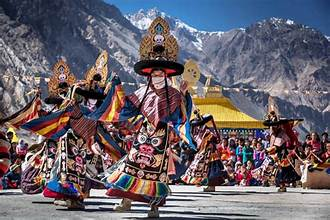
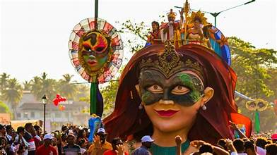
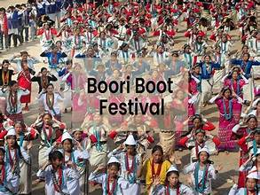
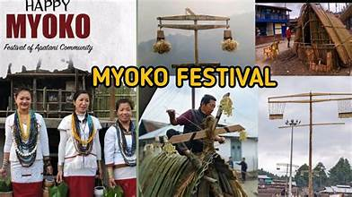
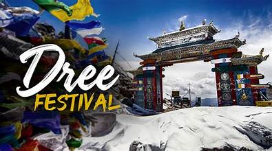
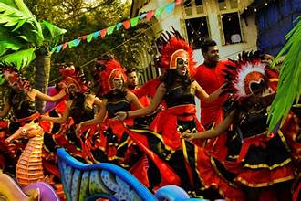
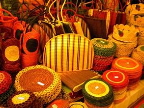
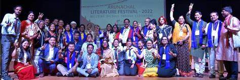
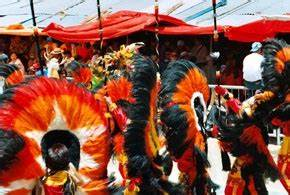

Welcome to Arunachal Pradesh Fairs and Festivals
🪔 Fairs and Festivals of Arunachal Pradesh – A Cultural Extravaganza 🎉
🕉️ Religious Festivals – Spiritual Bliss and Tradition

Losar Festival – A vibrant Tibetan New Year celebration marked by prayers, dances, and festive gatherings.
Reh Festival – Celebrated by the Idu Mishmi tribe, it honors the spirit of Nanyi Inyit with elaborate rituals and community feasts.


Sangken – A water festival celebrated by the Khamti tribe to mark the Buddhist New Year, symbolizing purification.
Oriah Festival – A festival of the Wancho tribe, marked by vibrant dances, sacrificial rituals, and community feasts.


Tamladu Festival – Celebrated by the Digaru Mishmi tribe to invoke nature deities and promote harmony with the environment.
🌾 Harvest and Agricultural Festivals – Celebrating Nature’s Gifts
Solung Festival – A harvest festival of the Adi tribe, marked by prayers for prosperity, dance, and the exchange of homemade delicacies.


Nyokum Yullo – A festival of the Nyishi tribe where prayers are offered for agricultural abundance and community well-being.
Si-Donyi – Celebrated by the Tagin tribe, this festival involves prayers, sacrifices, and vibrant traditional dances to honor deities.


Aran Festival – Celebrated by the Nishi tribe to mark the arrival of the agricultural season with prayers for a good harvest.
Yulo Festival – Observed by the Nyishi community to appease gods for a prosperous harvest.


Shapawng Yawng Manau Poi – Celebrated by the Singpho tribe, it highlights the rich culture of the community with traditional music and dance.
🎭 Cultural and Folk Festivals – Embracing Heritage

Boori Boot – A communal celebration of the Hill Miris tribe, promoting unity and prosperity through dance and rituals.
Myoko Festival – A social bonding festival of the Apatani tribe, involving elaborate rituals, feasts, and vibrant processions.


Dree Festival – The largest agricultural festival of the Apatani tribe, praying for a bountiful harvest and peace.
🕊️ Tribal and Folk Fairs – Preserving Ancient Traditions

Ziro Festival of Music – A contemporary blend of music and tribal culture that attracts global artists to the serene Ziro Valley.
Ethnic Fairs – A celebration of Arunachal Pradesh’s rich tribal diversity through handicrafts, performances, and cuisine.

🛕 Temple Festivals – Divine Devotion and Serenity

Tawang Festival – A spiritual and cultural festival that celebrates the vibrant Buddhist heritage of Arunachal Pradesh.
Parshuram Kund Mela – A sacred pilgrimage where devotees take a holy dip in the Lohit River to cleanse their sins.

🎨 Arts and Crafts Festivals – A Tribute to Creativity

Handicrafts and Handloom Fair – An exhibition that showcases the intricate textiles, bamboo crafts, and tribal artistry.
Arunachal Literature Festival – A platform that brings together literary enthusiasts, poets, and artists.


Ziro Handicrafts and Art Fair – A vibrant exhibition of bamboo crafts, textiles, and local artistry.
Monpa Handicraft Festival – Showcasing the intricate woodwork, masks, and textiles of the Monpa tribe.
